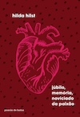

Um adolescente se apaixona por uma mulher mais velha e anos depois a reencontra num tribunal.
Discussão Desconectada: dia 25 de Junho de 2026 às 19h no Bretão
R$ 35,00 na Amazon

Poemas de uma das maiores escritoras em língua portuguesa do século XX
"Se te pareço noturna e imperfeita
Olha-me de novo. Porque esta noite
Olhei-me a mim, como se tu me olhasses.
E era como se a água
Desejasse
Escapar de sua casa que é o rio
E deslizando apenas, nem tocar a margem
Te olhei. E há tanto tempo
Espero
Que o teu corpo de água mais fraterno
Se estenda sobre o meu. Pastor e nauta
Olha-me de novo. Com menos altivez.
E mais atento."

Um livro sobre produtividade que não aumenta o seu nível de estresse
"Faça tempo não tem a ver com produtividade. A ideia não é fazer mais coisas, terminar tarefas mais rápido ou terceirizar sua vida. Em vez disso, trata-se de uma estrutura projetada para ajudá-lo a criar mais tempo durante o seu dia para as coisas com que você se importa, seja estar com a família, aprender uma língua, começar um negócio paralelo, fazer trabalhos voluntários, escrever um livro ou fi car craque em Mario Kart. Seja qual for a razão para você precisar de mais tempo, achamos que esse sistema pode ser útil. Um momento de cada vez, um dia de cada vez, você pode tomar as rédeas da sua vida."